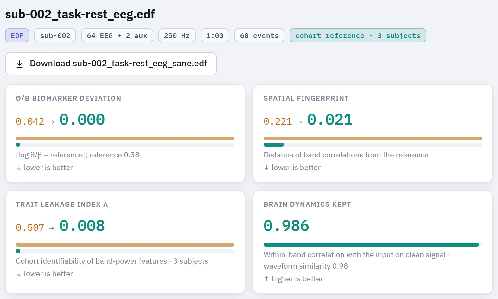
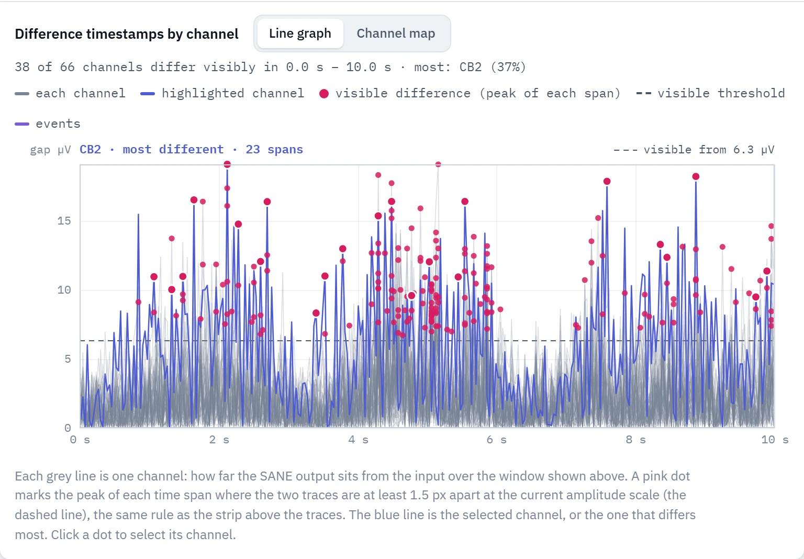
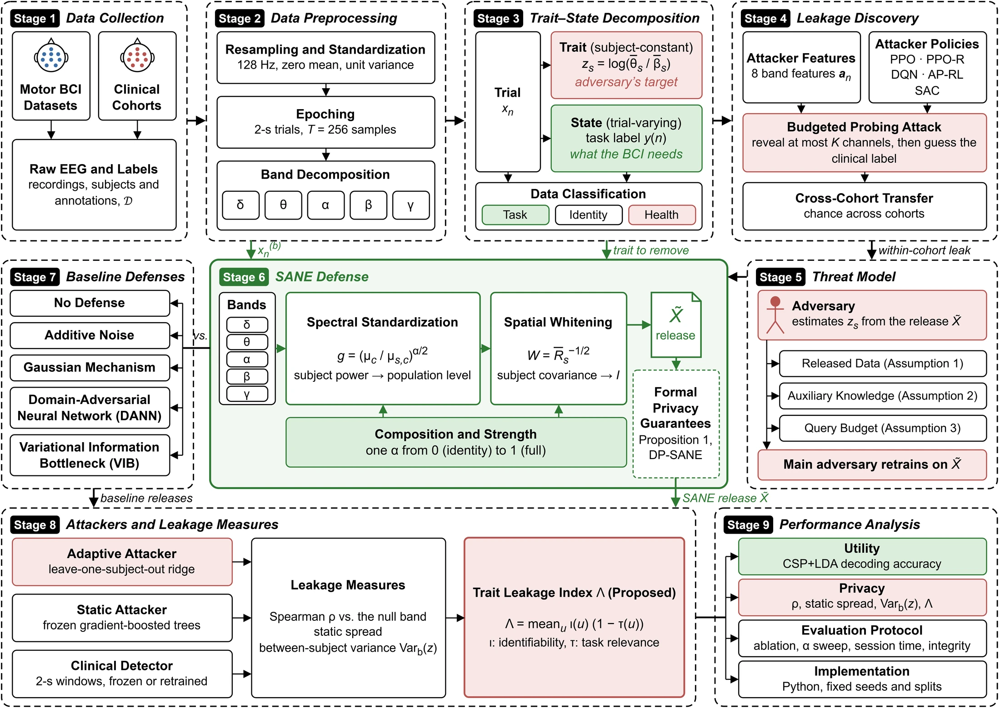
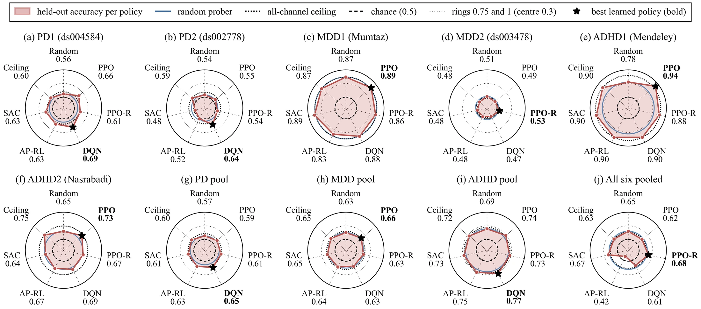

SANE
Spectral Attribute Neutralization for EEG
Paper and open-source tool, 2026
This page links the paper, the source code under the MIT license, and SANE Studio, a web tool that runs SANE on your own recordings inside the browser.
Abstract
Electroencephalography (EEG) records brain activity from the scalp, and brain–computer interfaces (BCIs) turn it into commands. Laboratories share these recordings after removing names. However, the signal still carries health markers nobody agreed to share. No known study has both measured and removed this leak. This study does both. First, it sorts recording data into task, identity and health classes and measures the leak with two attackers. Second, it proposes SANE (Spectral Attribute Neutralization for EEG), which edits each recording, so everyone has the same band strengths and channel pattern. This removes personal markers but keeps the brain activity decoders read. Third, it defines a Trait Leakage Index that scores the leak, and the SANE Studio web tool that runs SANE. Before any defense, a probing attacker recovered disorder labels in four of six Parkinson’s, depression and ADHD cohorts. An adaptive attacker estimated each subject’s theta/beta ratio on five BCI datasets (Spearman ρ 0.84 to 1.00). After SANE, this attacker did no better than guessing, and the index fell by 98 to 99%. Yet classification accuracy changed by at most 3.2 points. No other tested defense hid this biomarker everywhere. In a common test, SANE cost at most 1.7 accuracy points, whereas added noise cost up to 12 and left ρ at 0.85 to 0.99. DANN and VIB left ρ at 0.80 to 0.99, and differential privacy hid the biomarker only at chance accuracy. Although clinical data needs further work, SANE protects BCI data at little cost.
Keywords Brain–computer interfaces, electroencephalography, attribute inference, privacy-preserving signal processing, biomarker neutralization
From leak to neutralized EEG
The work runs in four steps. It first measures how much disease information public clinical EEG gives away, then builds SANE to remove it, and then applies SANE to ordinary BCI recordings that carry the same kind of marker.
-
Step 16 clinical cohorts
Find the leak
Six public cohorts of patients and healthy controls, two each for Parkinson’s disease, major depressive disorder (MDD) and attention-deficit/hyperactivity disorder (ADHD). Reinforcement-learning attackers reveal a few channels, read their band powers, and guess the diagnosis.
4 of 6 cohorts gave their labels away, for example 0.942 accuracy against 0.776 for random probing on ADHD1.
-
Step 2Method
Build SANE
The attackers needed only band power. The leak sits in each subject’s spectral and spatial profile, which stays nearly the same across all of that subject’s trials, while the task lives in how trials differ. Sorting what a recording holds into task, identity and health classes shows what to keep and what to remove. SANE keeps the task class and equalizes the subject-level profile with spectral standardization and spatial whitening.
No labels are used to fit SANE, so no diagnosis or attribute has to be chosen in advance.
-
Step 35 motor BCI datasets
Neutralize BCI data
These datasets were recorded to decode movement, not to diagnose anyone. They still carry the theta/beta ratio, a known correlate of attention disorders. An adaptive attacker estimated it for each subject (Spearman ρ 0.84 to 1.00), and detectors trained on the clinical cohorts were run on them unchanged.
After SANE the attacker fell to chance on 5 of 5 datasets, the clinical detectors separated subjects 71 to 83% less, and accuracy moved by at most 3.2 points.
-
Step 4Output
Release neutralized EEG
The result is a new release of the recordings in which the subject-level profile that carried the disease markers is equalized and the task signal is kept. Run on the four leaking clinical cohorts, SANE also stopped a detector trained on undefended EEG. SANE Studio does this for your own files.
That detector’s area under the receiver operating characteristic curve (AUC) on MDD1 fell from 0.984 to 0.444, and none of the four cohorts stayed significant.
Try it with SANE Studio
Choose EEG files, set the strength, and download the neutralized recordings in the format they came in. The same Python engine runs inside the page, so a recording never leaves your computer.


Your format back
Reads European Data Format (EDF, EDF+), BioSemi Data Format (BDF), BrainVision, EEGLAB and Functional Image File (FIF) recordings. EDF, BDF and BrainVision outputs edit the uploaded file, so headers, events and non-EEG channels stay as they were.
Stays on your computer
The browser version runs SANE with Pyodide, Python compiled to WebAssembly. Files are read and written in the page, and nothing is sent to a server.
A report for every run
Each session shows, before and after neutralization, the theta/beta deviation, the spread of the biomarker between subjects, the Trait Leakage Index, a leave-one-out attacker when five or more subjects are present, and a within-band fidelity score.
One strength control
Strength α runs from 0, which returns the input unchanged, to 1, full neutralization. A single subject is aligned to a normative profile instead of a cohort reference.
The first visit downloads about 50 MB, the Python packages that run SANE in the page. All 21 recordings of an OpenNeuro reference set were processed and checked, and in a blind round of 18 random files, 12 were processed and 6 were refused with the reason. SANE Studio neutralizes biomarkers, but it does not anonymize a recording completely.
Resources
Paper
The full paper in 17 pages, with the privacy bound, the attack algorithms and the SANE Studio appendix.
Read the paperCode
SANE Studio under the MIT license. The browser version is on main and the server version on server.
Open the repositoryLive tool
SANE Studio in the browser, with two sample recordings to try. No installation and no upload.
Open SANE StudioManual
Every screen, setting and output file of SANE Studio, with messages and what to do about them.
Read the manualKey results
Six clinical cohorts with Parkinson’s disease, depression or ADHD, and five motor BCI datasets with 3 to 64 channels.
How SANE works
A health marker such as the theta/beta ratio stays nearly constant across the trials of one subject, while the task lives in how trials differ. SANE removes the subject-level part and keeps the trial-level part.

Workflow of the study in nine stages. Each stage matches a subsection of the paper’s method, and Stage 6 is the SANE defense.
Spectral standardization
Moves each subject’s power in every channel and band to the population level. The gain is constant for a subject, so it adds no trial-level information.
Spatial whitening
Per-band Euclidean alignment gives every subject the same mean covariance. Each trial’s deviation from that mean, which common spatial patterns read, is kept.
SANE equalizes all five bands. The attacker’s target, the theta/beta ratio, comes from the two marked bands.
Results
Figures from the paper. Choose a tab, and click a figure to open it at full size.


Budgeted probing attack on clinical cohorts. A reinforcement-learning policy reads a few channels and predicts the diagnosis. A learned policy beat the random prober in four of six cohorts, for example 0.942 against 0.776 on ADHD1.
| Measure | BCI IV-2a | BCI IV-2b | Steyrl | Faller | PhysioNet |
|---|---|---|---|---|---|
| CSP+LDA accuracy, undefended → SANE | 0.772 → 0.772 | 0.704 → 0.676 | 0.785 → 0.779 | 0.742 → 0.710 | 0.590 → 0.578 |
| Attacker ρ, undefended | 1.00* | 0.85* | 0.93* | 0.84* | 0.99* |
| Attacker ρ, SANE | −0.65 | 0.42 | −0.24 | 0.43 | 0.18 |
| Null band of ρ | [−0.87, 0.55] | [−0.83, 0.65] | [−0.72, 0.51] | [−0.73, 0.59] | [−0.45, 0.38] |
| Trait Leakage Index, undefended → SANE | 0.311 → 0.002 | 0.272 → 0.006 | 0.238 → 0.005 | 0.297 → 0.005 | 0.432 → 0.007 |
| SANE runtime, whole dataset | 5.9 s | 1.7 s | 4.0 s | 6.2 s | 47.8 s |
CSP+LDA = common spatial patterns with linear discriminant analysis. ρ = Spearman correlation between each subject’s true and estimated theta/beta ratio, * = significant at p < 0.05. The null band is the 95% range of ρ on releases without biomarker information (1,000 simulations), and every SANE value lies inside it.
| Defense | BCI IV-2a | BCI IV-2b | Steyrl | Faller | PhysioNet |
|---|---|---|---|---|---|
| None | 0.606 / 1.00* | 0.689 / 0.85* | 0.642 / 0.93* | 0.634 / 0.84* | 0.539 / 0.99* |
| Added noise (σ = 1) | 0.554 / 0.98* | 0.571 / 0.85* | 0.530 / 0.91* | 0.512 / 0.85* | 0.513 / 0.99* |
| Differential privacy, ε = 4 | 0.538 / 0.97* | 0.500 / 0.88* | 0.511 / 0.64* | 0.491 / 0.22 | 0.469 / 0.85* |
| Differential privacy, ε = 1 | 0.531 / 0.80* | 0.500 / −0.53 | 0.504 / −0.44 | 0.484 / −0.03 | 0.471 / 0.07 |
| Domain-adversarial neural network (DANN) | 0.508 / 0.97* | 0.685 / 0.80* | 0.560 / 0.80* | 0.571 / 0.92* | 0.478 / 0.91* |
| Variational information bottleneck (VIB) | 0.520 / 0.97* | 0.687 / 0.87* | 0.610 / 0.91* | 0.600 / 0.86* | 0.528 / 0.99* |
| SANE | 0.700 / −0.65 | 0.672 / 0.42 | 0.645 / −0.24 | 0.620 / 0.43 | 0.560 / 0.18 |
Each cell gives the feature-level accuracy and the attacker’s ρ. * = ρ significant at p < 0.05, so the biomarker can still be recovered. SANE is the only defense without a significant ρ on any dataset. Differential privacy at ε = 1 hid the biomarker on four datasets, but with accuracy near chance.
Limits
What each step does and does not show, as reported in the paper.
- The leak was measured for three disorders. The six cohorts cover Parkinson’s disease, depression and ADHD only. A detector trained on one cohort did not work on the other cohort of the same disorder (AUC 0.386 to 0.621), and MDD2 showed no leak at all, so other disorders and recording setups may behave differently.
- SANE removes the profile it targets, not every trace. It equalizes each subject’s band power and channel covariance. The spectral shape inside each band, the variability across windows and other structure, such as cross-frequency coupling, are not equalized. The Trait Leakage Index measures the same second-order structure, so an index near zero is not a certificate.
- The BCI tests use one marker and small datasets. On the five BCI datasets the sensitive marker was the theta/beta ratio. The datasets hold 9 to 40 subjects, which limits the power to detect a weak residual.
- “Neutralized” holds against attackers trained on undefended EEG. On the clinical cohorts, a detector retrained on SANE output from the same cohort still recovered part of the diagnosis, with an AUC of 0.862 on MDD1 and 0.744 on ADHD2. A released cohort is therefore not free of every health trace.
- The task signal survives, but the waveform changes. CSP+LDA lost at most 3.2 points because it reads how trials differ. Decoders that rely on absolute spectral shape would lose more, and a released trial is a re-mixed signal that is not suited to clinical reading.
- No formal guarantee, and batch releases only. DP-SANE adds the Gaussian mechanism to SANE, but at the noise levels tested the accuracy fell close to chance. SANE needs the statistics of every subject, so it suits a dataset released as a whole, and SANE Studio does not anonymize a recording completely.
Citation
If you use SANE or SANE Studio, please cite the paper.
@misc{chowdhury2026sane,
author = {Chowdhury, Md. Tahmid Ashraf and Murad, Saydul Akbar},
title = {{SANE}: Spectral Attribute Neutralization for {EEG}},
year = {2026},
howpublished = {\url{https://github.com/tahmidashraf/sane-studio}},
note = {Paper and SANE Studio software}
}